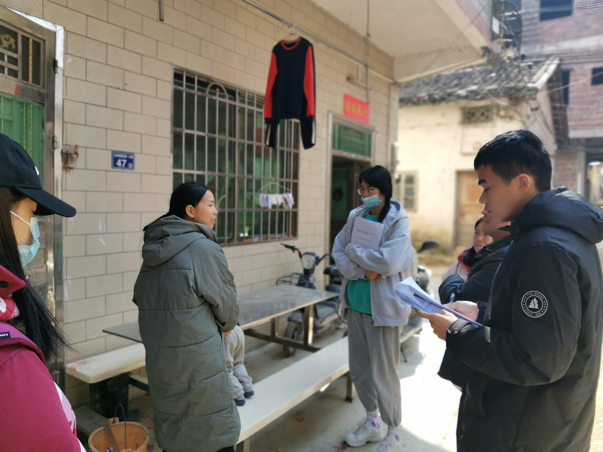
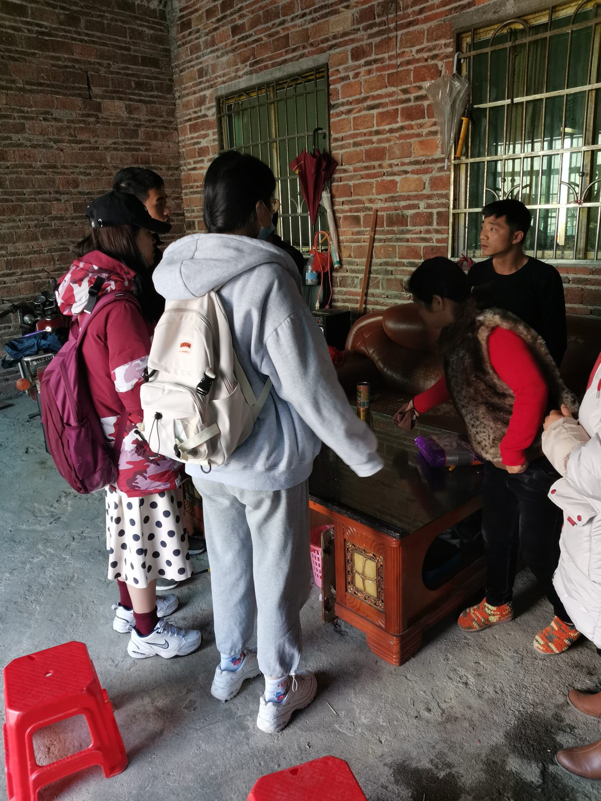
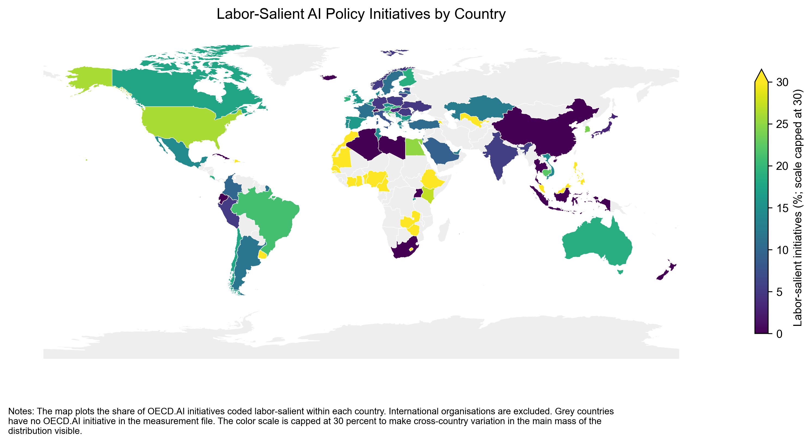
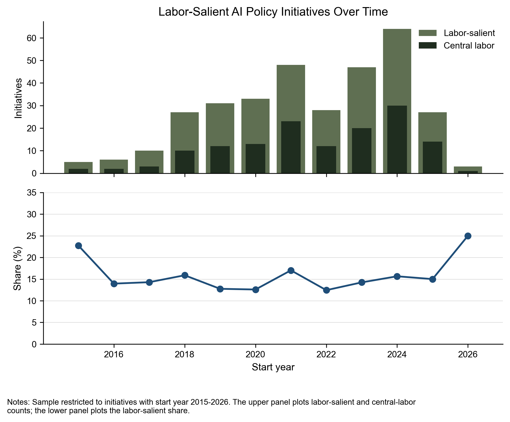
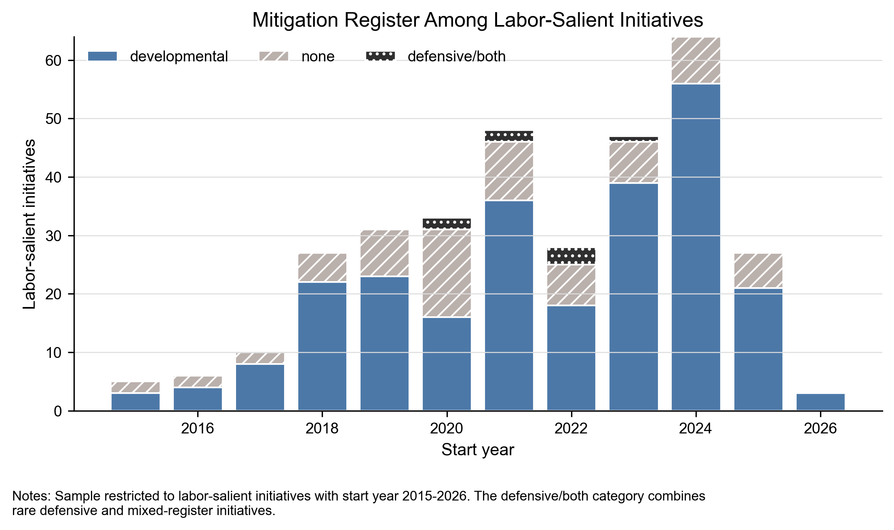

A Python tool for OCR preprocessing of historical Chinese documents: detects the printed page frame and reconstructs vertical-text layout for downstream recognition.
GitHub →A citation verification tool that checks bibliographic existence, field accuracy, and whether a source supports the cited claim.
GitHub →A Python toolkit for historical difference-in-differences designs where the policy shock occurs between observed data periods.
GitHub →A Stata command that flags fragile instrumental-variables results, using leave-one-out checks and a deletion-path search to find the observations driving IV significance.
GitHub →County- and prefecture-level datasets on Chinese historical institutions, including imperial examination degrees, clans, and Protestant missions.
GitHub →Co-designed and implemented a village-level survey on smallholder credit access, measuring whether farmers could obtain credit, how they used it, and whether access improved agricultural production and household livelihoods. The field investigation was covered by local news.
Media coverage →Implemented a randomized controlled trial in public and private schools, randomly assigning classrooms to a dialect-education module or an active control, and collected survey and test data on students' dialect learning.


How do governments understand AI's effects on work — as an opportunity to strengthen labor capacity, or as a threat requiring worker protection?
I scraped 2,348 AI-related policy initiatives from around the world and built an LLM-assisted text-classification pipeline to identify how each document discusses labor, employment, and technological change.
Figure 1 maps the share of initiatives in each country that explicitly address labor. Figures 2 and 3 distinguish between developmental policies, which emphasize skills, training, and education, and defensive policies, which focus on job loss, displacement, and worker protection.



The VOC destroyed millions of clove trees to restrict supply. Did this coercion maximize monopoly profits, or destroy more productive capital than commerce required?
I digitize VOC tree inventories and extirpation records, then combine them with Amsterdam prices and Batavia cargo accounts in a constrained monopoly model linking biological destruction to quantities, prices, and gross returns.
At the baseline demand elasticity, returns peak at 30 percent of the archival restriction scale. Observed policy exceeds this optimum by 230 percent and retains only 38 percent of peak returns, even when coercion is costless. VOC violence was commercially self-defeating.